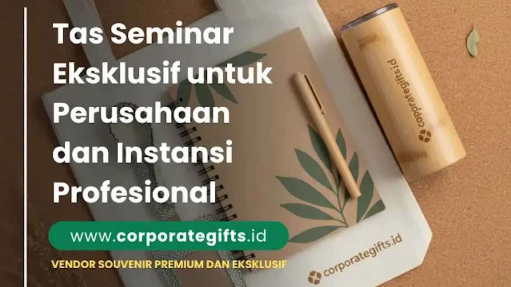

Corporate Gifts ID - Tas seminar eksklusif adalah tas premium yang dirancang khusus untuk acara korporat, seminar, dan konferensi bisnis, menggunakan material berkualitas tinggi seperti kulit sintetis, polyester premium, atau canvas tebal dengan finishing branding profesional seperti grafir, emboss, atau bordir. Tas ini berfungsi ganda: sebagai kelengkapan acara sekaligus media promosi jangka panjang yang memperkuat citra perusahaan setiap kali digunakan oleh peserta.
Dalam dunia bisnis modern, setiap detail dalam acara perusahaan mencerminkan citra dan profesionalisme penyelenggara. Mulai dari tata acara, narasumber, hingga souvenir seminar yang dibagikan kepada peserta, semuanya berperan penting dalam membangun persepsi brand. Salah satu elemen yang kini menjadi sorotan utama adalah tas seminar eksklusif.
Berbeda dari tas standar, tas seminar jenis ini dirancang dengan kualitas premium dan desain elegan yang sesuai dengan identitas perusahaan. Tak hanya berfungsi sebagai wadah perlengkapan acara, tas seminar custom juga menjadi media promosi jangka panjang yang mampu menampilkan kredibilitas brand di mata klien dan mitra bisnis.
Poin Kunci Tas Seminar Eksklusif:
- Peran Strategis: Berfungsi ganda sebagai wadah fasilitas acara sekaligus aset branding jangka panjang berdurabilitas tinggi.
- Material Unggulan: Memanfaatkan kulit sintetis PU, polyester premium water-repellent, hingga canvas tebal cordura.
- Teknik Branding Rapi: Logo diaplikasikan lewat deboss/emboss kulit, bordir komputer presisi, atau pelat logam laser-engraved.
- ROI Promosi Efektif: Dipakai kembali untuk aktivitas kerja harian peserta, memberikan eksposur merek berkelanjutan.
Mengapa Perusahaan Memilih Tas Seminar Eksklusif
Tas seminar bukan sekadar merchandise; ia adalah bagian dari strategi komunikasi visual perusahaan. Itulah mengapa banyak korporasi dan instansi profesional beralih ke produk tas seminar eksklusif. Beberapa alasan mengapa tas jenis ini menjadi pilihan utama antara lain:
- Meningkatkan citra brand perusahaan. Tas seminar berdesain premium memberikan kesan profesional dan berkelas di setiap pertemuan bisnis atau konferensi.
- Fungsional sekaligus elegan. Peserta tidak hanya mendapatkan souvenir, tetapi juga produk yang berguna untuk aktivitas kerja harian.
- Cocok untuk semua kalangan profesional. Mulai dari eksekutif hingga staf, semua dapat menggunakan tas seminar kantor ini tanpa kehilangan kesan formal.
- Media branding efektif. Logo dan identitas perusahaan dapat diaplikasikan dengan teknik grafir, emboss, atau bordir berkualitas tinggi.
Rekomendasi Model Tas Seminar Eksklusif
Setiap instansi memiliki karakter dan kebutuhan yang berbeda. Karena itu, desain tas seminar eksklusif hadir dalam berbagai model, menyesuaikan dengan konteks acara dan target pesertanya.
1. Tas Jinjing Kulit Sintetis
Model klasik ini sangat cocok untuk seminar bisnis, rapat tahunan, dan event korporat berskala besar.
- Kelebihan: Tahan lama, tampak mewah, dan cocok untuk branding elegan.
- Rekomendasi: Gunakan kombinasi warna gelap seperti hitam atau cokelat tua agar terkesan profesional.
- Contoh implementasi: Banyak BUMN dan universitas negeri memilih model ini untuk konferensi nasional.
2. Tas Laptop Seminar
Model tas laptop memberikan kesan modern dan profesional. Dilengkapi dengan kompartemen penyimpanan gadget, dokumen, serta logo perusahaan, jenis ini populer di kalangan perusahaan teknologi dan lembaga keuangan.
- Kelebihan: Multifungsi dan mendukung citra digital-savvy.
- Cocok untuk: Seminar inovasi, workshop IT, dan pelatihan profesional.
- Tips branding: Tambahkan logo perusahaan dengan bordir halus agar tampil eksklusif.
3. Tas Ransel Premium (Backpack)
Ransel profesional kini menjadi alternatif populer untuk seminar yang melibatkan mobilitas tinggi. Desainnya ergonomis dan tetap elegan dengan bahan seperti polyester premium atau kulit sintetis.
- Kelebihan: Nyaman digunakan, stylish, dan berfungsi jangka panjang.
- Cocok untuk: Pelatihan lapangan, kegiatan CSR, atau acara akademik profesional.
Ketiga model ini dapat dimodifikasi menjadi tas seminar custom pada paket Paket Seminar Kit kami, menyesuaikan warna, logo, hingga bentuk sesuai kebutuhan branding instansi Anda.

Pilihan material premium seperti kulit sintetis PU dan polyester tahan air menciptakan kesan eksklusif pada tas seminar kantor.
Material Premium untuk Tas Seminar Eksklusif
Kualitas bahan menjadi pembeda utama antara tas seminar eksklusif dan versi ekonomis. Berikut beberapa material yang umum digunakan:
- Kulit Sintetis (PU Leather). Memberikan kesan mewah dan tahan lama. Sangat cocok untuk perusahaan yang ingin menonjolkan kemapanan dan profesionalisme eksekutif.
- Polyester Premium. Bahan ringan, tahan air (water-repellent), dan mudah dibersihkan. Cocok untuk seminar korporat yang mengedepankan fungsionalitas kerja.
- Canvas Tebal dan Cordura. Menghadirkan tampilan kasual namun tetap profesional. Sering digunakan dalam tas seminar kantor bergaya modern minimalis.
Dengan kombinasi bahan premium dan finishing rapi, tas tidak hanya menjadi souvenir, tetapi juga simbol eksklusivitas acara yang memperkuat loyalitas para peserta.
Strategi Branding Melalui Tas Seminar Eksklusif
Salah satu nilai utama dari tas seminar eksklusif adalah kemampuannya dalam memperkuat identitas visual perusahaan. Berikut strategi yang bisa diterapkan agar tas berfungsi maksimal sebagai media branding:
- Gunakan teknik grafir atau emboss logo. Memberikan tampilan elegan dan tahan lama dibandingkan sablon biasa.
- Sesuaikan desain dengan identitas warna perusahaan. Warna konsisten membantu memperkuat kesan profesional di mata publik.
- Tambahkan detail personalisasi. Misalnya nama peserta atau posisi jabatan untuk acara berskala VIP melalui kartu identitas kulit terpasang.
- Pilih desain timeless. Hindari tren musiman. Desain sederhana namun elegan akan tetap relevan di berbagai acara perusahaan.
Dengan penerapan branding yang konsisten, tas seminar bukan hanya hadiah, tetapi juga alat komunikasi visual jangka panjang yang mendukung citra korporat.
Kisaran Harga Tas Seminar Eksklusif di Pasaran
Harga tas seminar eksklusif sangat bergantung pada bahan baku, kerumitan aksesoris, dan teknik pengaplikasian logo. Berikut gambaran umum kisarannya:
| Jenis Tas Eksklusif | Kisaran Harga | Keterangan |
|---|---|---|
| Tas kulit sintetis PU | Rp150.000 - Rp300.000 | Kesan premium, cocok untuk tamu VIP dan direksi |
| Tas laptop premium | Rp200.000 - Rp400.000 | Desain modern, ideal untuk seminar profesional dan IT |
| Ransel eksklusif polyester | Rp250.000 - Rp450.000 | Cocok untuk event pelatihan perusahaan dan akademik |
Catatan: Vendor profesional biasanya menyediakan opsi tas seminar custom dengan harga menyesuaikan kuantitas dan kompleksitas desain. Dalam jumlah besar, harga dapat turun hingga 20-30% dari harga satuan.
Keunggulan Menggunakan Tas Seminar Eksklusif untuk Instansi
- Meningkatkan kredibilitas acara. Peserta akan lebih menghargai acara yang memberikan souvenir berkualitas tinggi dan dipersiapkan dengan matang.
- Memperpanjang daya promosi. Tas digunakan kembali oleh peserta di berbagai kesempatan, menjadikan logo perusahaan tetap terlihat di ruang publik.
- Meningkatkan loyalitas dan kepercayaan klien. Souvenir eksklusif menjadi bentuk apresiasi nyata dari perusahaan kepada mitra strategis.
- Memperkuat citra profesional. Tas seminar kantor yang dirancang khusus memberi kesan serius dan berorientasi kualitas tinggi.
Dengan semua manfaat tersebut, tak heran jika tas seminar eksklusif kini menjadi standar bagi perusahaan multinasional, BUMN, dan lembaga pendidikan ternama.
Tips Memesan Tas Seminar Eksklusif yang Tepat
- Pilih vendor berpengalaman. Pastikan mereka mampu memproduksi tas premium dengan hasil presisi, jahitan rapi, dan kontrol kualitas ketat.
- Gunakan desain custom. Sesuaikan ukuran, warna, dan posisi logo sesuai dengan identitas corporate guideline perusahaan Anda.
- Minta contoh produk terlebih dahulu. Sampel fisik atau digital mockup penting untuk mengevaluasi kualitas bahan, resleting, dan finishing branding.
- Pertimbangkan waktu produksi. Untuk tas eksklusif dengan detail custom khusus, idealnya lakukan pemesanan minimal 3-4 minggu sebelum hari pelaksanaan acara.
- Perhatikan detail kecil. Resleting logam anti-karat, lapisan kain dalam (furing) bermutu, dan bantalan bahu empuk bisa meningkatkan nilai fungsional produk.
Vendor yang berpengalaman seperti Corporate Gifts ID juga menawarkan layanan preview desain dan mockup digital gratis untuk memastikan hasil akhir sesuai ekspektasi Anda sebelum proses jahit massal dimulai.
Pertanyaan Seputar Tas Seminar Eksklusif (FAQ)
Kesimpulan
Memilih tas seminar eksklusif adalah langkah strategis untuk memperkuat citra profesional perusahaan dan menciptakan kesan mendalam bagi peserta. Dengan desain tas seminar custom yang elegan serta kualitas material yang unggul, tas tidak hanya berfungsi sebagai souvenir, tetapi juga sebagai alat promosi jangka panjang.
Baik untuk acara perusahaan, lembaga pendidikan, atau seminar profesional, tas seminar kantor berperan penting dalam menegaskan reputasi dan nilai sebuah brand. Pastikan Anda bekerja sama dengan vendor terpercaya yang memahami kebutuhan dan standar visual perusahaan Anda.
Untuk panduan lebih lengkap mengenai aneka jenis tas, bahan, dan ide desain untuk berbagai tipe acara, baca artikel panduan kami: Rekomendasi Tas Seminar Elegan untuk Acara Formal dan Kreatif atau pelajari lebih lanjut di Katalog Corporate Gifts ID.